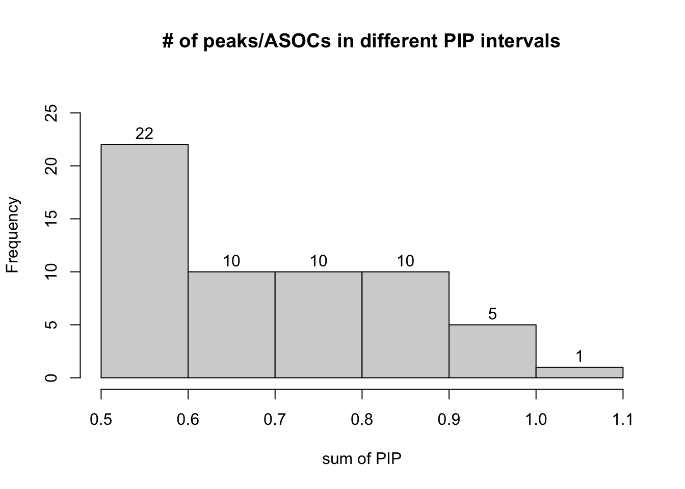
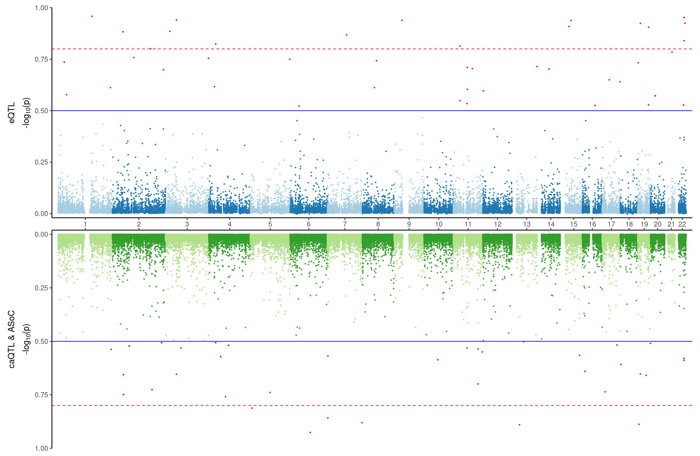

ctwas analysis with caQTL and ASOC jointly
Lifan Liang
2024-08-29
Last updated: 2024-11-07
Checks: 7 0
Knit directory: neuron_stim_eQTL100/
This reproducible R Markdown analysis was created with workflowr (version 1.7.0). The Checks tab describes the reproducibility checks that were applied when the results were created. The Past versions tab lists the development history.
Great! Since the R Markdown file has been committed to the Git repository, you know the exact version of the code that produced these results.
Great job! The global environment was empty. Objects defined in the global environment can affect the analysis in your R Markdown file in unknown ways. For reproduciblity it’s best to always run the code in an empty environment.
The command set.seed(20231109) was run prior to running
the code in the R Markdown file. Setting a seed ensures that any results
that rely on randomness, e.g. subsampling or permutations, are
reproducible.
Great job! Recording the operating system, R version, and package versions is critical for reproducibility.
Nice! There were no cached chunks for this analysis, so you can be confident that you successfully produced the results during this run.
Great job! Using relative paths to the files within your workflowr project makes it easier to run your code on other machines.
Great! You are using Git for version control. Tracking code development and connecting the code version to the results is critical for reproducibility.
The results in this page were generated with repository version aaa9552. See the Past versions tab to see a history of the changes made to the R Markdown and HTML files.
Note that you need to be careful to ensure that all relevant files for
the analysis have been committed to Git prior to generating the results
(you can use wflow_publish or
wflow_git_commit). workflowr only checks the R Markdown
file, but you know if there are other scripts or data files that it
depends on. Below is the status of the Git repository when the results
were generated:
Ignored files:
Ignored: .DS_Store
Ignored: .RData
Ignored: .Rhistory
Ignored: data/.DS_Store
Ignored: data/single_group_ctwas/.DS_Store
Untracked files:
Untracked: GTEx_vs_SCZ.pdf.2024-08-26_21-04-15.log
Untracked: GTEx_vs_SCZ.png
Untracked: GTEx_vs_SCZ.png.2024-08-26_13-44-01.log
Untracked: GTEx_vs_SCZ.png.2024-08-26_20-30-40.log
Untracked: GTEx_vs_SCZ.png.2024-08-26_20-51-18.log
Untracked: GTEx_vs_SCZ.png.2024-08-26_20-59-28.log
Untracked: GTEx_vs_SCZ.png.2024-08-26_21-03-42.log
Untracked: GTEx_vs_SCZ.tiff
Untracked: GTEx_vs_SCZ.tiff.2024-08-26_21-04-43.log
Untracked: Rplot.png
Untracked: geneMapping.rds
Note that any generated files, e.g. HTML, png, CSS, etc., are not included in this status report because it is ok for generated content to have uncommitted changes.
These are the previous versions of the repository in which changes were
made to the R Markdown (analysis/ctwas_caQTL_ASOC.Rmd) and
HTML (docs/ctwas_caQTL_ASOC.html) files. If you’ve
configured a remote Git repository (see ?wflow_git_remote),
click on the hyperlinks in the table below to view the files as they
were in that past version.
| File | Version | Author | Date | Message |
|---|---|---|---|---|
| Rmd | aaa9552 | Lifan Liang | 2024-11-07 | wflow_publish(c("analysis", "docs", "data")) |
| html | 607bd8b | Lifan Liang | 2024-11-06 | Build site. |
| Rmd | cebe60c | Lifan Liang | 2024-11-06 | wflow_publish(c("analysis", "data")) |
| html | 79e4e57 | Lifan Liang | 2024-10-29 | Build site. |
| Rmd | 4a40cd9 | Lifan Liang | 2024-10-29 | wflow_publish(c("analysis", "data", "docs")) |
| html | 4a40cd9 | Lifan Liang | 2024-10-29 | wflow_publish(c("analysis", "data", "docs")) |
| html | 43696b6 | Lifan Liang | 2024-10-16 | Build site. |
| Rmd | f696905 | Lifan Liang | 2024-10-16 | wflow_publish(c("analysis", "data")) |
| html | a24afc5 | Lifan Liang | 2024-10-10 | Build site. |
| Rmd | 9368449 | Lifan Liang | 2024-10-10 | wflow_publish(c("analysis", "data")) |
| html | 0638876 | Lifan Liang | 2024-10-10 | Build site. |
| Rmd | 72fff51 | Lifan Liang | 2024-10-10 | wflow_publish(c("analysis", "data")) |
| html | ef89bed | Lifan Liang | 2024-09-19 | Build site. |
| Rmd | c693b4c | Lifan Liang | 2024-09-19 | wflow_publish(c("analysis", "data", "docs")) |
| html | c693b4c | Lifan Liang | 2024-09-19 | wflow_publish(c("analysis", "data", "docs")) |
| html | cd29898 | Lifan Liang | 2024-09-10 | Build site. |
| Rmd | e9d5e77 | Lifan Liang | 2024-09-10 | wflow_publish(c("analysis", "data", "docs")) |
| html | e9d5e77 | Lifan Liang | 2024-09-10 | wflow_publish(c("analysis", "data", "docs")) |
| html | a5a77fe | Lifan Liang | 2024-08-29 | Build site. |
| Rmd | 3dd8c95 | Lifan Liang | 2024-08-29 | wflow_publish(c("analysis", "data", "docs")) |
| html | 3dd8c95 | Lifan Liang | 2024-08-29 | wflow_publish(c("analysis", "data", "docs")) |
Merging caQTL and ASOC
I got top caQTL per peak per condition, first I took the union of caQTLs FDR<5% within the same cell type and removed caQTLs with nominal P value > 0.1. The allelic specific open chromatin (ASOC) was processed the same way. Then these two sets were merged together. If an ASOC was within a peak with a caQTL. The one with smaller nominal P value would be included into the merged set.
| 0hr_GABA | 1hr_GABA | 6hr_GABA | 0hr_npglut | 1hr_npglut | 6hr_npglut | 0hr_nmglut | 1hr_nmglut | 6hr_nmglut | |
|---|---|---|---|---|---|---|---|---|---|
| ASOC | 11297 | 18252 | 21118 | 5573 | 9259 | 10116 | 11370 | 22207 | 21846 |
| processed_ASOC | 17428 | 8860 | 18466 | 23678 | 12376 | 27961 | 25789 | 12892 | 27897 |
| caQTL | 4318 | 8954 | 10504 | 1802 | 4435 | 6017 | 4957 | 10497 | 11622 |
| processed_caQTL | 13520 | 14082 | 14164 | 7475 | 7757 | 7835 | 15352 | 15895 | 15918 |
| Union | 27730 | 33110 | 34944 | 15186 | 18380 | 18824 | 30126 | 38137 | 38078 |
Parameter extimation
 ### PVE
### PVE
Overall, total PVE across all condition was 28.6%.

| Version | Author | Date |
|---|---|---|
| 3dd8c95 | Lifan Liang | 2024-08-29 |
| Version | Author | Date |
|---|---|---|
| 3dd8c95 | Lifan Liang | 2024-08-29 |
Significant peaks
There are 59 peaks/ASOCs if the cutoff was set to PIP>0.5.
| Version | Author | Date |
|---|---|---|
| 3dd8c95 | Lifan Liang | 2024-08-29 |
PIP distribution across conditions
For these 19 peaks/ASOCs with PIP>0.8,

Likely target genes
We haven’t computed the ABC score. But I still tried three approaches to identify target genes: (1) check the eQTL with FDR<20%. Possible candidate genes are shown in the column “eqtl.gene”; (2) check the co-activation between peaks accessibility and gene expression computed by Zicheng. Cut off is FDR<20%. The column “p2g.gene” is showing the results; (3) Check which genes have overlapped with the peak, shown in the column “overlap.gene”.
Co-activation and eQTL agreed with each other on two ASoCs. One is rs12741781 targeting CEP170 and SDCCAG8. Another is rs215759 targeting TCF20.
Please note that I don’t have peak information for ASoCs. So I simply extended ASoCs by 250bps downstream and upstream as the peak.
Connection to eQTL cTWAS
I tried to make Miami plot to visualize regional overlap between caQTL cTWAS and the eQTL cTWAS. But the correlation is not obvious.The bottom plot is setting all PIPs to 0 if their credible set index is 0 and genes/peaks with PIP>50% were colored as red.

To align the significant peaks to the significant genes in the cTWAS results, we check QTL distance between the two. Given that each peak/gene has 9 QTLs included at maximum, I used the QTL with the highest PIP for the corresponding peak/gene. There 17 peaks close to a gene (distance<500K bps) in the cTWAS results. One SNP is shared by an ASOC and the gene ZNF823.
Venn diagram below showed the overlap between cPeaks and genes with PIP>50%.
[1] 1
sessionInfo()R version 4.1.2 (2021-11-01)
Platform: x86_64-apple-darwin17.0 (64-bit)
Running under: macOS Big Sur 10.16
Matrix products: default
BLAS: /Library/Frameworks/R.framework/Versions/4.1/Resources/lib/libRblas.0.dylib
LAPACK: /Library/Frameworks/R.framework/Versions/4.1/Resources/lib/libRlapack.dylib
locale:
[1] en_US.UTF-8/en_US.UTF-8/en_US.UTF-8/C/en_US.UTF-8/en_US.UTF-8
attached base packages:
[1] grid stats4 stats graphics grDevices utils datasets
[8] methods base
other attached packages:
[1] RColorBrewer_1.1-2 VennDiagram_1.7.1 futile.logger_1.4.3
[4] GenomicRanges_1.46.1 GenomeInfoDb_1.30.1 IRanges_2.28.0
[7] S4Vectors_0.32.3 BiocGenerics_0.40.0 dplyr_1.0.7
[10] pheatmap_1.0.12 ggplot2_3.3.5 workflowr_1.7.0
loaded via a namespace (and not attached):
[1] Rcpp_1.0.11 getPass_0.2-2 ps_1.6.0
[4] assertthat_0.2.1 rprojroot_2.0.2 digest_0.6.29
[7] utf8_1.2.2 R6_2.5.1 futile.options_1.0.1
[10] evaluate_0.14 httr_1.4.2 highr_0.9
[13] pillar_1.7.0 zlibbioc_1.40.0 rlang_1.0.0
[16] rstudioapi_0.13 whisker_0.4 callr_3.7.0
[19] jquerylib_0.1.4 DT_0.26 rmarkdown_2.11
[22] stringr_1.4.0 htmlwidgets_1.5.4 RCurl_1.98-1.6
[25] munsell_0.5.0 compiler_4.1.2 httpuv_1.6.5
[28] xfun_0.29 pkgconfig_2.0.3 htmltools_0.5.2
[31] tidyselect_1.1.1 tibble_3.1.6 GenomeInfoDbData_1.2.7
[34] fansi_1.0.2 crayon_1.4.2 withr_2.4.3
[37] later_1.3.0 bitops_1.0-7 jsonlite_1.7.3
[40] gtable_0.3.0 lifecycle_1.0.1 DBI_1.1.2
[43] formatR_1.11 git2r_0.29.0 magrittr_2.0.2
[46] scales_1.1.1 cli_3.1.1 stringi_1.7.6
[49] XVector_0.34.0 fs_1.5.2 promises_1.2.0.1
[52] bslib_0.3.1 ellipsis_0.3.2 generics_0.1.2
[55] vctrs_0.3.8 cowplot_1.1.1 lambda.r_1.2.4
[58] tools_4.1.2 glue_1.6.1 purrr_0.3.4
[61] crosstalk_1.2.0 processx_3.5.2 fastmap_1.1.0
[64] yaml_2.2.2 colorspace_2.0-2 knitr_1.37
[67] sass_0.4.1